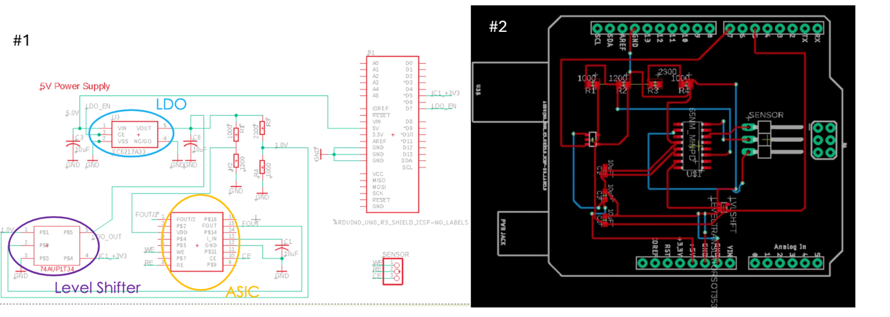
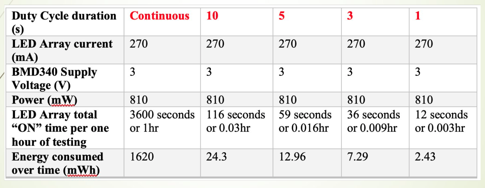

Power Optimization of a Continuous Glucose Monitoring (CGM) System
August 2024 – May 2025
Problem
CGM battery life only lasted a few hours. This is not sufficient for those who must monitor their glucose levels at various points throughout the day without charging every few hours.
Solution
Power the implantable glucose sensor on a lower duty cycle to reduce power consumption and extend the life of the system. However, switching the subcutaneous electrochemical sensor on/off can affect sensor signal output without a proper stabilization period. To meet specifications, the signal output had to be within a 5% margin of error.
Contributions
- Formulated pulse width modulation (PWM) algorithms in C++ to operate the system’s microcontroller at lower duty cycles.
- Formulated a C++ algorithm to extract necessary parameters to process sensor output. Created a MATLAB script to continuously graph the processed output signal.
- Designed a small printed circuit board for the implantable miniaturized sensor hardware in Autodesk Fusion and interfaced it with the respective microcontroller to test PWM algorithms on sensor output.
- For each PWM algorithm variation, collected sensor output using the same glucose concentration over the same duration. Used multiple percent-error modes to determine the error for each variation.
Outcome
While all duty cycle variations were under the 5% margin of error, lower duty cycles led to higher error—most likely due to insufficient time for the sensor to stabilize. However, even the higher duty cycles implemented by the PWM algorithms extended battery life by around 60%.
Figures

